Карточка договора
Или как договор перестал быть просто файлом
Или как договор перестал быть просто файлом
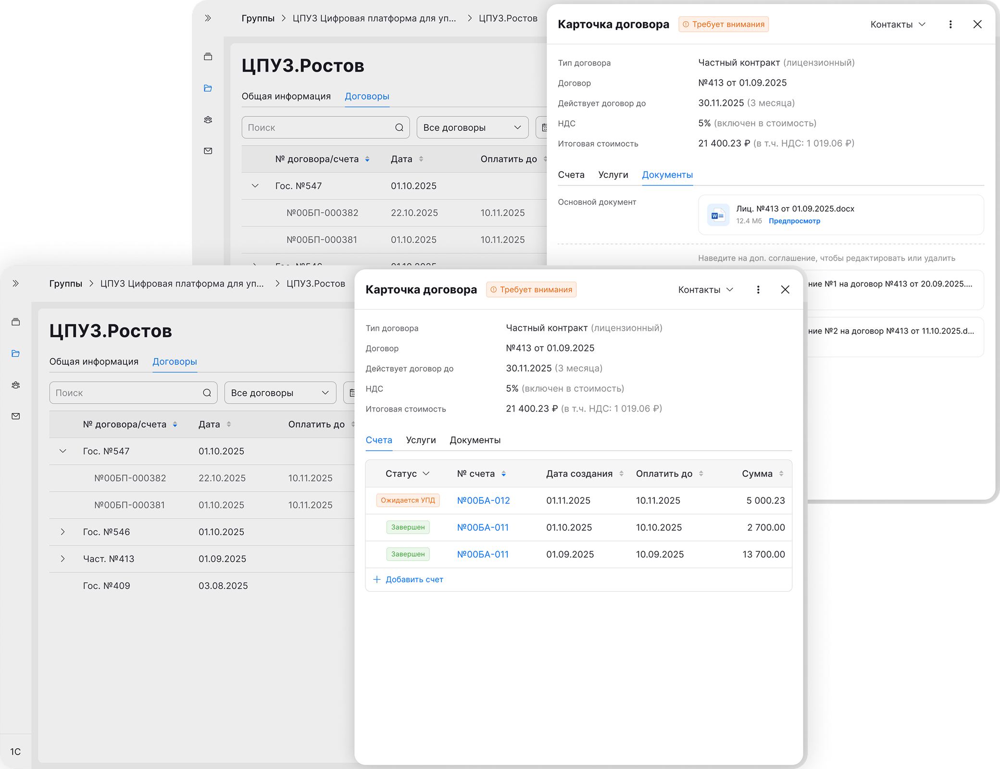
На момент старта проекта большая часть работы с контрагентами происходила в 1С. Одновременно с этим многие процессы отдела коммерции и юридического отдела уже были реализованы в корпоративном сайте. Чтобы не разделять связанные сценарии между разными системами, бизнес принял решение интегрировать работу с контрагентами из 1С в корпоративный сайт
После внедрения в доменную область стало понятно, что договор в текущей системе не является единой точкой работы. Чтобы собрать полный контекст по договору, пользователям приходилось переключаться между разными разделами и вручную сопоставлять информацию. Это замедляло выполнение ключевых сценариев и усложняло работу с договором
Проведение глубинных интервью, анализ main steps как отправной точки для поиска решения, описание job story, выбор основной гипотезы. Решение прорабатывал в связке с продуктовым менеджером
После получения задачи провёл интервью с коллегами из коммерческого отдела и на их основе собрал main steps и ограничения
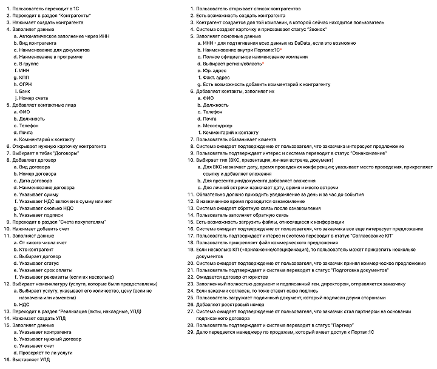
Чтобы глубже понять предметную логику, самостоятельно изучил текущую работу с договором в 1С через 1С:Fresh — веб-версию системы, доступную в браузере
Разобрал ключевые сценарии: связь договора со счетами, УПД и доп. соглашениями, статусную модель документов, а также создание контрагентов и услуг. Это позволило выделить паттерны, которые легли в основу логики интерфейса
Сформулировал job stories, которые охватывали полное взаимодействие с договором
На основе интервью, main steps и job stories была сформулирована ключевая гипотеза решения
Если сделать договор единой точкой работы, в которой будут собраны все связанные сущности и напоминания по следующим действиям, то пользователь сможет вести договор в одном месте, не теряя контекст и не пропуская обязательные шаги
Первым шагом собрал data model. Определил, какие сущности связаны с договором, какие поля обязательны для договора, контрагента, счета и УПД, и какие зависимости между ними нужно учесть в интерфейсе
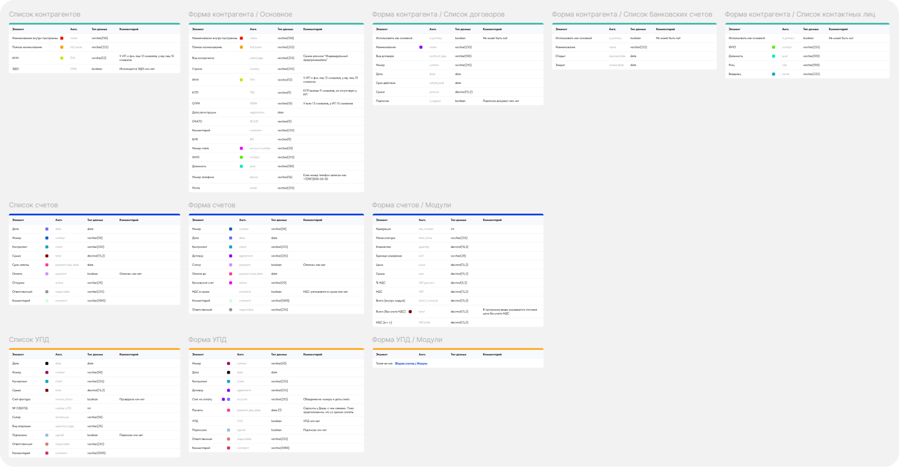
Следующим этапом стало создание единого пространства для работы с договорами и счетами
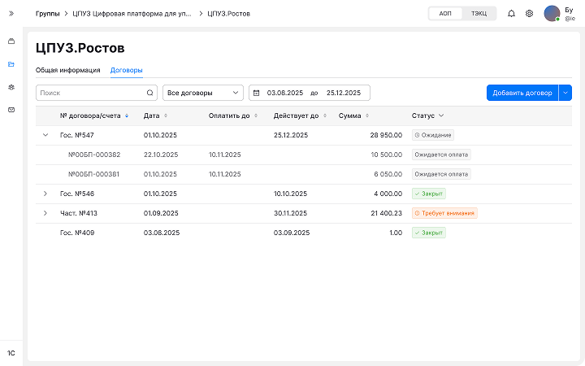
Отдельно проработал статусную модель и переходы между статусами
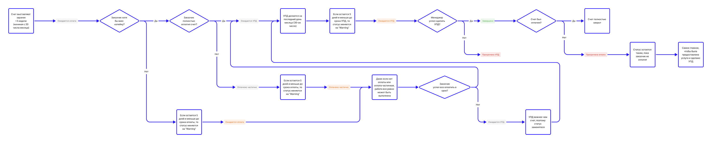
Первая итерация помогла проверить уровень детализации блока со счетами. Стало понятно, что одних ссылок на сущности недостаточно и для сохранения контекста нужно показывать статус прямо в списке
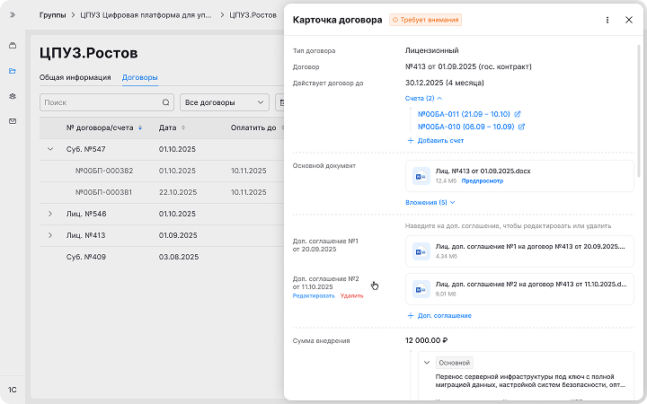
Услуги в первой версии были представлены карточками, из-за чего блок становился слишком громоздким и хуже сканировался, особенно если услуг по договору было несколько
Вдобавок уточнили важное доменное правило, что НДС наследуется от договора, поэтому в интерфейсе не было смысла отдельно акцентировать его на уровне услуги
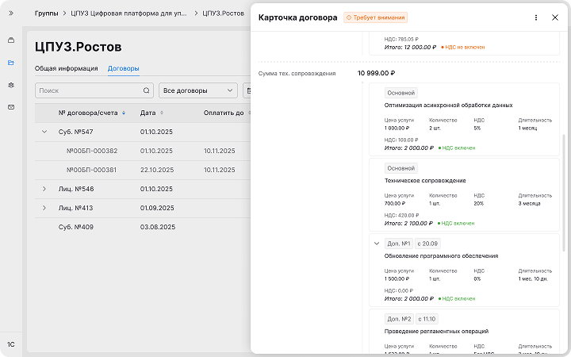
Также стало видно, что контакты участвуют не только как справочная информация, но и как часть частого рабочего сценария
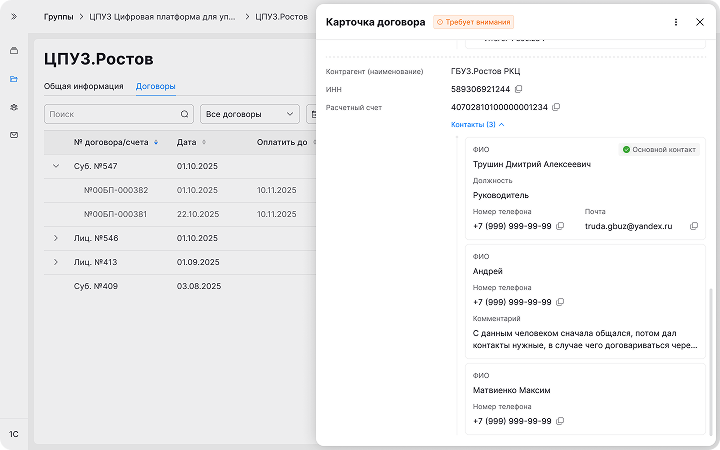
Во второй итерации поднял контакты в верхнюю часть карточки, т.е. повысил их приоритет, чтобы пользователь мог быстрее перейти к коммуникации, если это необходимо
Счета и услуги перевёл в табличный формат. Он лучше подходил для сравнения однотипных сущностей и экономил вертикальное пространство. Для счетов добавил статусы прямо в списке, чтобы пользователь видел текущее состояние без перехода внутрь
Чтобы снизить перегруженность карточки и упростить навигацию, я также развел счета, услуги и документы по отдельным табам. Это помогло отделить часто используемый сценарий от второстепенных: документы и услуги нужны пользователю реже, тогда как работа со счетами занимает большую часть времени менеджера
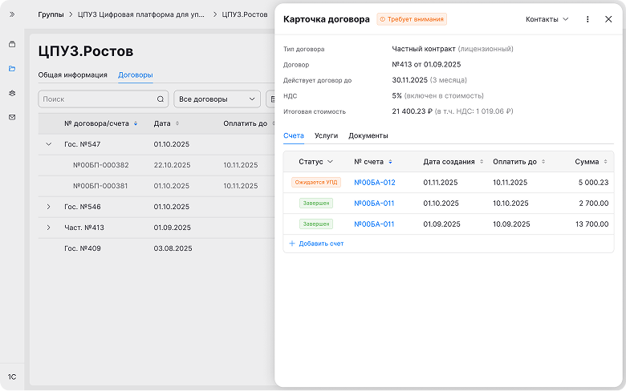
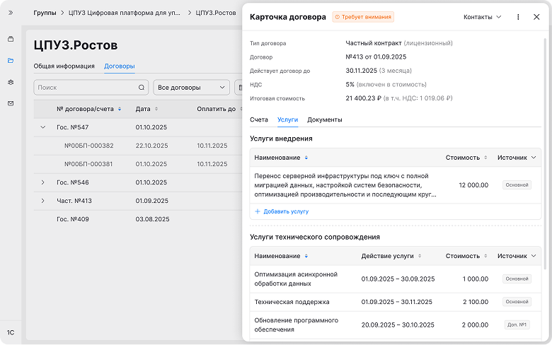
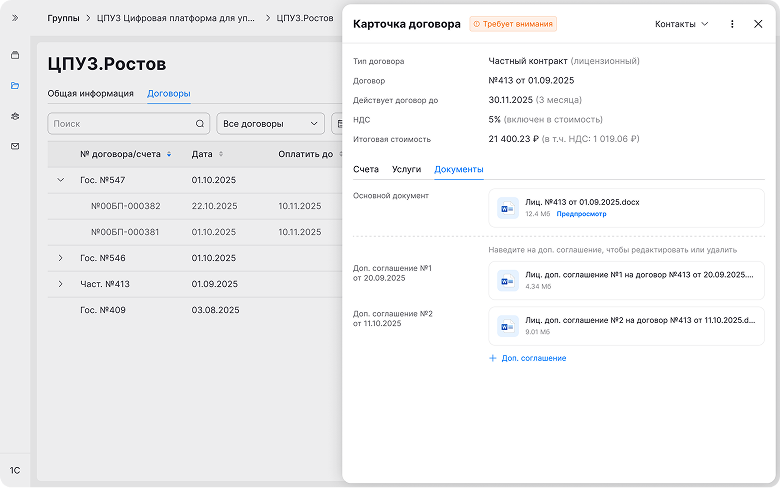
После этого собрал прототип и проверил его на пользователях, чтобы оценить понятность структуры, заметность статусов и удобство ключевых сценариев
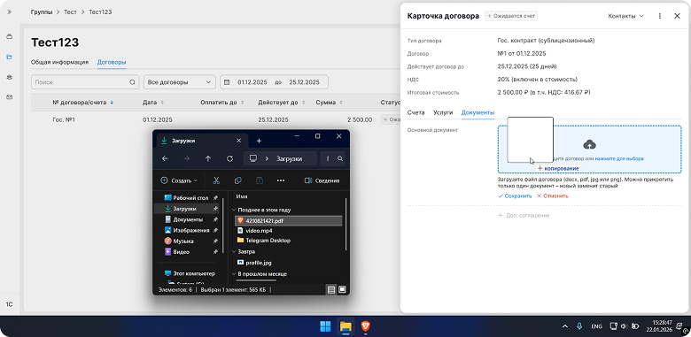
Проверка на прототипе показала, что пользователям стало проще ориентироваться в состоянии договора, быстрее находить нужные данные и не терять следующие обязательные действия в сценарии
В результате я подготовил концепт единой точки работы с договором, где все связанные сущности собраны в одном интерфейсе
Поскольку решение еще не было реализовано, фактические метрики отсутствуют. При запуске я бы оценивал время работы с договором и число пропущенных счетов/УПД
Отдельно я бы проверял удобство сценария через юзабилити-тестирование, оценивая удовлетворённость пользователей и понятность интерфейса
Этот кейс стал для меня хорошей практикой работы в новой предметной области, т.к. раньше я не сталкивался с 1С и DMS-сценариями
Ещё один вывод для меня – ценность итеративного подхода. Быстрые прототипы помогают раньше увидеть слабые места, проверить сценарий вживую и точнее доработать решение